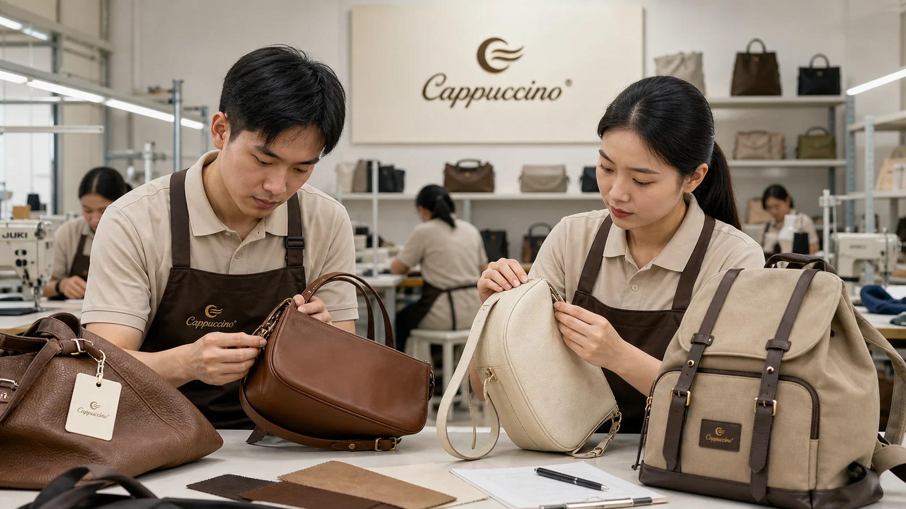

Brief
Share target buyer, reference style, material, logo, order quantity, and launch timeline.
OEM/ODM Bag Manufacturing
Cappuccino Bag supports OEM/ODM bag projects with design review, material selection, sample development, full-process QC, flexible production, and global delivery communication.
Share target buyer, reference style, material, logo, order quantity, and launch timeline.
Review material, structure, color, hardware, lining, packaging, and price range.
Move approved samples into cutting, stitching, assembly, inline inspection, and packing.
Coordinate final inspection, carton information, shipment plan, and repeat-order records.
Your Project Stage
Start with the information you have. Mark unknown details for review rather than treating an early idea as an approved specification.
Define the intended user, use case and essential functions. Compare product families to prepare a focused first brief.
Explore product collectionsBring dimensions, materials, construction details, logo artwork, quantity split and requested dates. Identify anything still open for review.
Discuss your tech packRecord what should stay and what needs changing, with measurements and reference photos. Review examples of material, branding and sampling decisions.
Review development examplesBring the agreed specification and approved sample reference. Review quantity, materials, QC, packaging and timing before confirming production.
Review MOQ and pricing factorsDevelopment Routes
Choose the closest starting point. Each route still needs a defined brief, sample review and project-specific confirmation.
Start with the intended use and product requirements, then review materials, structure and sampling before production planning.
See how briefs are developedIdentify specific changes to fit, compartments, carry, materials or branding. Document the revised sample for approval.
Discuss the changes you needShortlist an existing product direction, then review branding, colors, labels and packaging against your brief.
Find a product starting pointReview repeat-order specifications, quantity splits, quality checkpoints and packing requirements for the proposed production run.
Review factory and quality evidenceMOQ, sample fees, material availability and timing are confirmed for the defined project. Read the MOQ, pricing and sampling guide.
Branded QC Workflow
For overseas buyers, clear sampling and QC communication reduces risk. Cappuccino Bag can organize material cards, logo options, pre-production samples, inspection notes and packing details for each order.

Best Fit
Private-label women’s bags, seasonal launches, repeat-order development and branded packaging.
SKU testing, lower MOQ projects, practical customization and fast quotation communication.
Stable production, style variety, market-ready colors and bulk shipment coordination.
Tell us your product type, target market, material, logo, and expected order quantity.